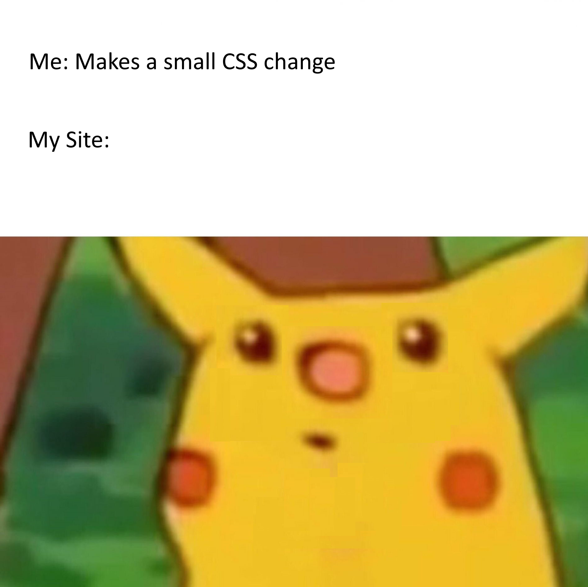
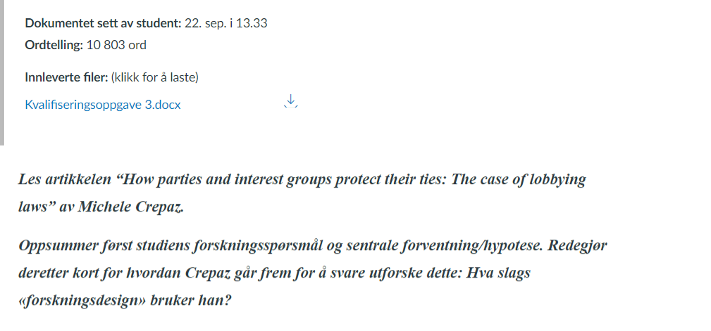

Fjerde Faglige Seminar
Gard Olav Dietrichson
29-09-2022
Etter lang ventetid er den endelig her…
Forbedret Presentasjon!
Vi opererer nå i 2D
- Med mindre du leser dette i etterkant av seminaret…
- PDF mulighetene er ikke like fancy desverre
Forhåpentligvis blir veien til neste gang litt bedre

Planen for i dag
- Dere kan den nå
- Vi diskuterer oppgaven
- Jeg sier noe (forhåpentligvis) nyttig om temaet
- Åpen spørretid
- Pause
- Gruppeoppgave
Temaet i dag er Forskningsdesign
- I dag ser vi på hypoteser/forventninger
- Disse kommer fra tidligere teoretiske bidrag
- Hva har andre funnet om liknende tilfeller
- Husk at disse skal gi mening i henhold til forskningsspørsmålet
Kvalifiseringsoppgaven
- Les artikkelen “How parties and interest groups protect their ties:
The case of lobbying laws” av Michele Crepaz.
- Oppsummer først studiens forskningsspørsmål og sentrale forventning/hypotese. Redegjør deretter kort for hvordan Crepaz går frem for å svare utforske dette: Hva slags «forskningsdesign» bruker han?
Generell tilbakemelding

Generell tilbakemelding
- Hva var bra?
- De fleste hadde fått med seg nært alle punktene om forskningsdesign
- Hva manglet ofte?
- Det vanligste var at problemstilling og tema ble forvirret
- Men mange forvirret også det mer generaliserte funnet som en forventning
- Hva kunne vært enda bedre?
- Separere de to hypotesene
- Vise forståelse for hvordan de er sammenhengende
Løsningsforslag
- Forskningsspørsmålet er “Hvordan påvirker forholdet mellom partier
og interessegrupper lovgivning som søker å regulere disse forholdene?”
- En liten munnfull ja
- Tittelen virker til å hinte om at det handler om “Hvorfor overlever
disse båndene?”
- Men som teorien forklarer er det tydelig at de overlever uansett, spørsmålet er hvordan forholdet påvirker lovgivingen.
- Det er også et fokus på styrken til disse båndene.
Løsningsforslag
- Sentrale hypoteser:
- Eksistensen av sterkere parti-gruppe bånd leder til en “utvanning” av lovgivning som regulerer lobbyvirksomhet
- Effekten vil være avhengig av om det politiske partiet har
regjeringsmakt eller ikke.
- Men også om de kontrollerer viktige deler av beslutningsprosessen
- agendasetting til beslutningstakning
- Forskningsdesignet:
- Komparativt case studie, med 3 land
- Prosess-sporing
Hva handlet alt dette om?
- Det viktige her var å få med seg hypoteser og forskningsspørsmålet
- Hypoteser er det vi forventer
- Kommer oftest fra teorier
- Hva har tidligere forskning funnet på liknende områder?
- Og hvorfor har jeg grunn til å tro at de er gjeldende her?
Hvor skulle man funnet dette?
- Artikkelen er strukturert litt merkelig til tider
- Men som ventet kommer selve forskningsspørsmålet på slutten
- Eller i alle fall hintet om dette spørsmålet
- Vi er litt tilbake til forskningsvasen her
Hvor skulle man funnet dette?

Hvordan er denne artikkelen strukturert?
- Seksjonene er åpenbart ikke helt som jeg poengterte
- Dette er vanlig dessverre..
- Introduksjonen er veldig lang, og mye av det viktige blir poengtert der
- “Teori” kapittelet er å finne under del 2 og 3
- Seksjon 2 har mye med å forklare det generelle rammeverket forfatteren bruker
- Seksjon 3 har mer med de faktiske forventningene å gjøre
Forventningene

Forventningene

Til slutt, forskningsdesignet
- Finnes i seksjon 4
- Sier veldig tydelig hva det overordnede designet er
- Hva slags metode som brukes
- Komparativ Case-studie, tre land, prosess-sporing
- Kvalitativt
Åpen spørretid
- Har noen møtt på noen problemer som de ønsker å dele?
Gruppediskusjon
- Aller først, kom på noen årsaksspørsmål i statsvitenskap
Gruppediskusjon
Hva slags generelt «forskningsdesign» ville du valgt for å studere dette/disse spørsmålene? Mange enheter (N) eller få/ett (casestudie)? Data fra ett tidspunkt, eller over tid? Og hvorfor? Eller en miks? Hvilke muligheter og begrensninger har de ulike designalternativene?
Gitt ingen forslag
Påvirker regimetype sjansen for om en stat involveres i krig og i tilfelle hvorfor? Ifølge teorien om «demokratisk fred» («democratic peace») tenderer demokratier til å unngå krig med hverandre. Mulige årsaker er at demokratiske institusjoner begrenser politiske lederes handlingsrom og/eller at borgerne i demokratier tenderer til å foretrekke fredelige løsninger på mellomstatlige konflikter.
Gitt ingen forslag
Hva gjør at enkelte land har lave nivåer av kvinnelig representasjon? Noen mener at det har med valgssystemer å gjøre, mens andre sier at det har med lange tradisjoner med dominans av maskuline trekk i rekrutteringsløpet.
Neste kvalifiseringsoppgave
Les artikkelen “The complementarity advantage: parties, representativeness and newcomers’ access to power” av Karen Celis og Silvia Erzeel. Fokuser på artikkelens generelle forskningsdesign: hva er analyseenhet og hvordan har forskerne valgt ut «case»? Og hva slags data baserer de seg på? Bruk definisjonene fra forelesning: med «case» mener vi her ikke landene i studien selv om disse benevnes som «case». Et tips er å starte med å se på artikkelens hypoteser.
Som alltid
- Lever i tide!
- Ta med godt humør!!
- Takk for i dag!!!